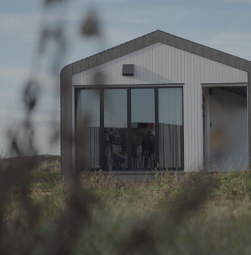

All EcoCabins have a high insulation value, are
produced
with
sustainable and / or natural materials where possible and have the "round corners" as a striking
external characteristic, made possible by the specific use of materials. The advantages of
building
with wood are many: wood is light, flexible, insulates well and builds quickly and efficiently.
Our goal is to continuously further develop and innovate
the
EcoCabins, so that
the EcoCabins are ultimately 100% sustainable and circular. A condition for this is that the
EcoCabins
remain affordable. With the help of the sun, the wind and the best insulation you can enjoy.
All EcoCabins have a high insulation value, are produced with sustainable and / or natural materials where possible and have the 'round corners' as a striking external characteristic, made possible by the specific use of materials. The advantages of building.
All EcoCabins have a high insulation value, are produced with sustainable and / or natural materials where possible and have the 'round corners' as a striking external characteristic, made possible by the specific use of materials. The advantages of building.

Wood
De draagconstructies van EcoCabins bestaan uit hout. Hout is
duurzaam en.
Glass wool
De combinatie van glaswol met
een houtskelet constructie
geeft
een.
Workmanship
De draagconstructies van EcoCabins bestaan uit hout. Hout is
duurzaam en.
Triple glass
De combinatie van glaswol met
een houtskelet constructie geeft een.
Steel
base
Het stalen onderstel is sterk zijn en heeft de benodigde
stijfheid die.
Infrared floor
De vloer wordt opgewarmd
middels opgewekte warmte uit eigen
zonne-energie.